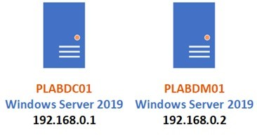
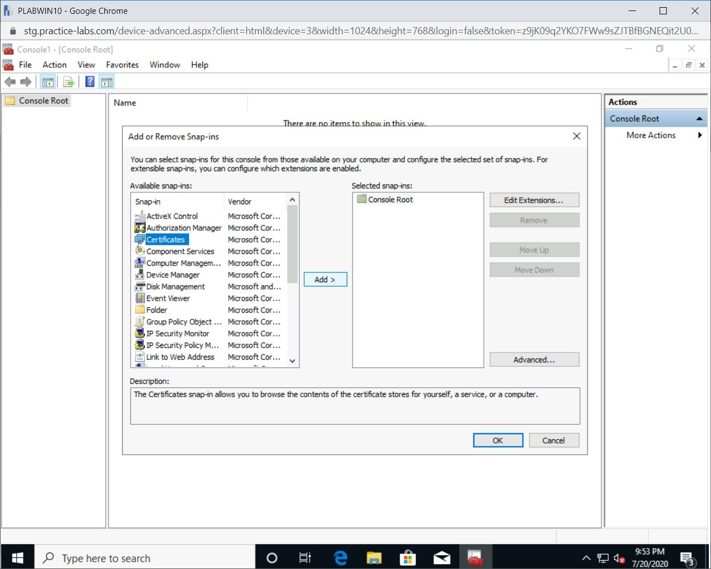
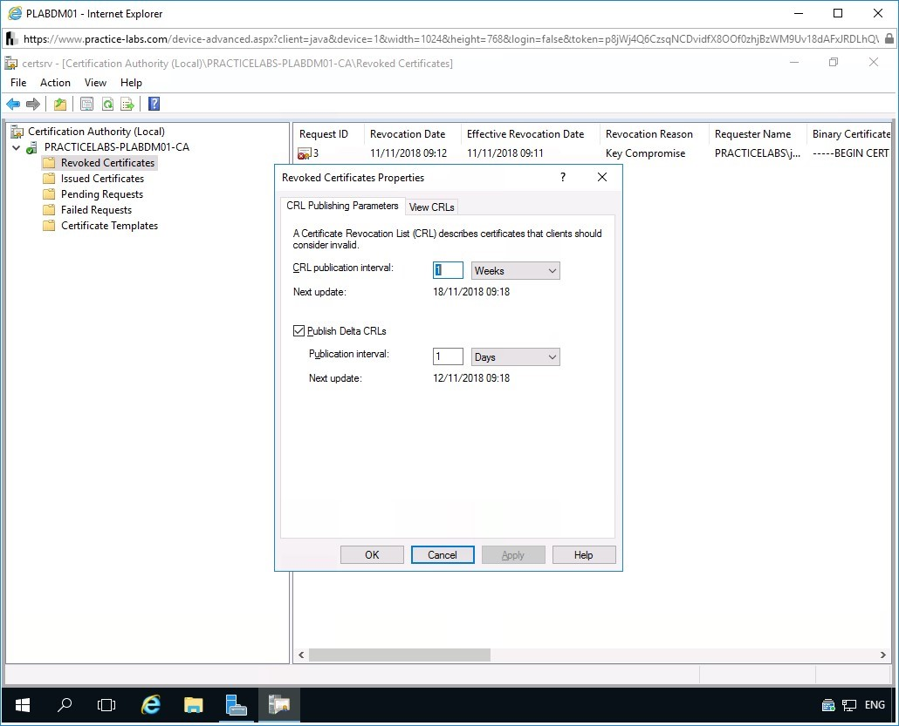
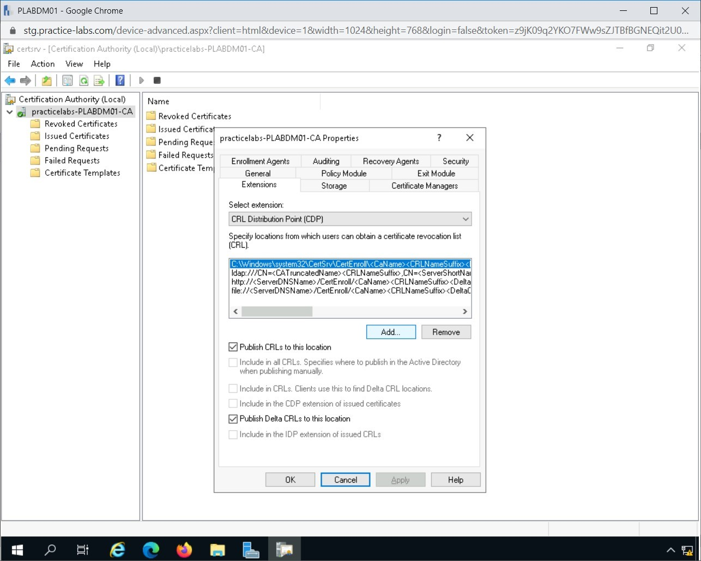

Introduction
9beca326-b493-4b0e-b3dc-d7dfb77df3c9
Welcome to the Certificate Management Practice Lab. In this module, you will be provided with the instructions and devices needed to develop your hands-on skills.
dc640c20-9434-45ea-b7c2-6d4d6a196bfc
Learning Outcomes
In this module, you will complete the following exercises:
- Exercise 1 - Install and Configure Active Directory Certificate Services
- Exercise 2 - Configure Certificate Revocation Lists (CRLs)
After completing this lab, you will be able to:
- Install Active Directory Enterprise Root Certificate Service
- Configure Active Directory Certificate Services
- Install Subordinate CA
- Configure Subordinate CA
- Request User Certificates
- Verify Issued Certificate
- Configure a New Path for CRLs
- Add Certificate Managers
Exam Objectives
The following exam objectives are covered in this lab:
- 2.1 Given a scenario, apply security solutions for infrastructure management
Note: Our main
focus is to cover the practical, hands-on aspects of the exam
objectives. We recommend referring to course material or a search engine
to research theoretical topics in more detail.
Lab Duration
It will take approximately 1 hour to complete this lab.
7ca097e1-3b9c-4203-a9a2-3215787353ca
Help and Support
For more information on using Practice Labs, please see our Help and Support page. You can also raise a technical support ticket from this page.
Click Next to view the Lab topology used in this module.
d2c53300-f951-45a9-9aa4-3d4ecae69e11
Lab Topology
During your session, you will have access to the following lab configuration.

Depending on the exercises, you may or may not use all
of the devices, but they are shown here in the layout to get an overall
understanding of the topology of the lab.
- PLABDC01 - (Windows Server 2019 - Domain Server)
- PLABDM01 - (Windows Server 2019 - Domain Member)
- PLABKALI01 - (Kali Linux 2019 - Linux Kali)
- PLABWIN10 - (Windows 10 - Domain Member Workstation)
- PLABCENTOS - (Centos 8 Linux - Stand-alone Linux Server)
- PLABALIENVAULT - (Alien Vault Linux Security Management Platform)
Click Next to proceed to the first exercise.
<
Home |
README >
CompTIA Cybersecurity Analyst (CySA+) Practice Labs
Exercise 1 - Install and Configure Active Directory Certificate Services
Public Key Infrastructure (PKI) is a framework for
managing policies in the creation, distribution, and management of
digital certificates in an organization. PKI provides secure electronic
transfer of information between devices in the public network such as
the Internet and used extensively in e-commerce transactions, online
banking, and secure e-mail. When a user password is not enough to verify
a user’s identity, PKI provides an additional security layer as it
requires proof to confirm the identities of both parties involved and
encrypts the information exchanged over an unsecured public network.
PKI is implemented in Windows Server through Active
Directory Certificate Services (AD CS) and works alongside with Active
Directory Domain Services (AD DS). Although AD DS is not a mandatory
requirement, it simplifies the administration of users, computers, or
services that require certificates to verify their identity.
When AD CS is installed on a server, the server
assumes the role of a Root Certification Authority (CA) that signs and
verifies the certificates issued to a requesting party. To protect the
Root CA from security breaches, it is normally kept in a secure network
accessible only to trusted personnel. To ensure that users, computers,
or service can request a certificate from a trusted source, a
subordinate CA is typically installed that handles this requirement. A
subordinate CA gets its authority to issue certificates from the Root CA
server.
In this exercise, you will install and configure Active Directory Certificate Services in a Windows domain environment.
Learning Outcomes
After completing this exercise, you will be able to:
- Install Active Directory Enterprise Root Certificate Service
- Configure Active Directory Certificate Services
- Install Subordinate CA
- Configure Subordinate CA
Your Devices
You will be using the following devices in this lab. Please power these on now.

- PLABDC01 - (Windows Server 2019 - Domain Server)
- PLABDM01 - (Windows Server 2019 - Domain Member)
Task 1 - Install Active Directory Enterprise Root Certificate Service
For PKI to work, you need to have install and
configure a root certificate authority, which needs to be secured with
multiple layers of security.
In this task, you will install AD Certificate Services on the Domain Controller device. To do this, perform the following steps:
Step 1
Ensure you have powered on the required devices in the lab environment. Connect to PLABDC01. Server Manager opens automatically.
Click Add roles and features.
Figure 1.1 Screenshot of PLABDC01: Clicking the Add roles and features link in Server Manager.
Step 2
On the Before you begin page of the Add Roles and Security Features Wizard, click Next.
Figure 1.2 Screenshot of PLABDC01: Clicking Next on the Before you begin page on the Add Roles and Features Wizard.
Step 3
On the Select installation type page, keep the default option and click Next.
 Figure 1.3 Screenshot of PLABDC01: Clicking Next on the Select installation type page on the Add Roles and Features Wizard.
Figure 1.3 Screenshot of PLABDC01: Clicking Next on the Select installation type page on the Add Roles and Features Wizard.
Step 4
In Select destination server, keep the default options and click Next.
Figure 1.4 Screenshot of PLABDC01: Clicking Next on the Select destination server page on the Add Roles and Features Wizard.
Step 5
From the Select server roles page, click the Active Directory Certificate Services checkbox.
The Add Roles and Features Wizard automatically appears, click Add Features.
Figure 1.5 Screenshot of PLABDC01: Clicking Add Features on the Add Roles and Features Wizard.
Step 6
Back on the Select server roles page, notice the Active Directory Certificate Services checkbox is now selected.
Click Next to continue.
Figure
1.6 Screenshot of PLABDC01: Selecting Active Directory Certificate
Services on the Select server roles page on the Add Roles and Features
Wizard and clicking Next.
Step 7
On the Select features page, keep the default settings then click Next.
Figure 1.7 Screenshot of PLABDC01: Clicking Next on the Select features page on the Add Roles and Features Wizard.
Step 8
Read through the information about Active Directory Certificate Services and click Next.
Figure
1.8 Screenshot of PLABDC01: Clicking Next on the Active Directory
Certificate Services page of the Add Roles and Features Wizard.
Step 9
From the Select role services page, verify that the Certification Authority checkbox is selected, then select the Online Responder checkbox.
Figure
1.9 Screenshot of PLABDC01: Selecting the role services on the Select
role services page on the Add Roles and Features Wizard.
Step 10
The Add Roles and Features Wizard box appears as the component you selected will require other components for it to run.
Click Add Features to proceed.
Figure 1.10 Screenshot of PLABDC01: Clicking Add Features on the Add Roles and Features Wizard dialog box.
Step 11
With Certification Authority and Online Responder checkboxes selected, click Next.
Figure 1.11 Screenshot of PLABDC01: Clicking Next on the Select role services page on the Add Roles and Features Wizard.
Step 12
Read through the Web Server Role (IIS) to find out its role in the network and then click Next.
Figure 1.12 Screenshot of PLABDC01: Clicking Next on the Web Server Role (IIS) on the Add Roles and Features Wizard.
Step 13
In the Select role services page, accept the default role services that will be added by IIS. Click Next.
Figure 1.13 Screenshot of PLABDC01: Clicking Next on the Select role services page on the Add Roles and Features Wizard.
Step 14
On the Confirm installation services page, click Install.
Figure
1.14 Screenshot of PLABDC01: Clicking Install on the Confirm
installation selections page on the Add Roles and Features Wizard.
Step 15
The installation will begin, which will take a few minutes.
Important: If you get an error stating, “The request to add or remove features on the specified server failed.” Click Close.
This is caused when the Server Manager is busy collecting system
information on the server following a recent start-up or reboot. Wait
for about 1 minute and start over with the installation of the Windows
features in this task. If the same problem persists, restart the
affected computer and start over with the installation of the Windows
features.
Figure 1.15 Screenshot of PLABDC01: Showing the installation progress page on the Add Roles and Features Wizard.
Step 16
Click Close when Installation progress reports a successful operation.
Figure 1.16 Screenshot of PLABDC01: Clicking Close on the Installation progress page on the Add Roles and Features Wizard.
You are back on the Server Manager console.
Task 2 - Configure Active Directory Certificate Services
After a brief installation of Active Directory Certificate Services and Online Responder on PLABDC01, you must set up these services with the appropriate settings. This will enable these services to perform the intended roles.
To configure Active Directory Certificate Services, follow these steps:
Step 1
On PLABDC01, ensure that you are on the Server Manager console.
Click on the flag icon and click Configure Active Directory Certificate Services on the destination server link.
Figure 1.17 Screenshot of PLABDC01: Clicking the Configure Active Directory Certificate Services on the destination server link.
Step 2
On the Credentials page, the system has detected you are currently signed in as PRACTICELABS\Administrator.
Click Next.
 Figure 1.18 Screenshot of PLABDC01: Clicking Next on the Credentials page on the AD CS Configuration wizard.
Figure 1.18 Screenshot of PLABDC01: Clicking Next on the Credentials page on the AD CS Configuration wizard.
Step 3
In Role Services, select the Certification Authority checkbox. There is a momentary pause when you select this.
Then, select the Online Responder checkbox and then click Next.
Figure 1.19 Screenshot of PLABDC01: Selecting Online Responder on the AD CS Configuration wizard and clicking Next.
Step 4
On the Setup Type page, ensure that the Enterprise CA option is selected. Click Next.
 Figure
1.20 Screenshot of PLABDC01: Clicking Next on the Setup Type page with
Enterprise CA selected on the AD CS Configuration wizard.
Figure
1.20 Screenshot of PLABDC01: Clicking Next on the Setup Type page with
Enterprise CA selected on the AD CS Configuration wizard.
Step 5
On the CA Type page, ensure that Root CA is selected. Click Next.
Figure 1.21 Screenshot of PLABDC01: Clicking Next on the CA Type page with Root CA selected on the AD CS Configuration wizard.
Step 6
On the Private Key page, verify that the Create a new private key radio button is selected.
Click Next.
Figure
1.22 Screenshot of PLABDC01: Clicking Next on the Private Key page on
the AD CS Configuration wizard with the Create a new private key option
selected.
Step 7
On the Cryptography for CA dialog box, keep the default cryptographic settings, and click Next.
Figure 1.23 Screenshot of PLABDC01: Clicking Next on the Cryptography for CA page on the AD CS Configuration wizard.
Step 8
On the CA Name page, keep the default CA Name supplied by the AD CS Configuration and then click Next.
Figure 1.24 Screenshot of the PLABDC01: Clicking Next on the CA Name page on the AD CS Configuration wizard.
Step 9
On the CA Validity page, keep the default settings and click Next.
Figure 1.25 Screenshot of PLABDC01: Clicking Next on the Validity Period page on the AD CS Configuration wizard.
Step 10
On the CA Database page, keep the default settings and then click Next.
Figure 1.26 Screenshot of PLABDC01: Clicking Next on the CA Database page on the AD CS Configuration wizard.
Step 11
On the Confirmation page, read through the summary settings of this Active Directory Certificate Services that are about to be set up.
Click Configure to proceed with the configuration of AD CS.
Figure 1.27 Screenshot of the PLABDC01: Clicking Configure on the Confirmation page on the AD CS Configuration wizard.
Step 12
The certificate service is being set up.
On the Results page, the Configuration succeeded message is displayed. Click Close.
Figure 1.28 Screenshot of PLABDC01: Clicking Close on the Results page on the AD CS Configuration wizard.
Step 13
You are back on the Server Manager console. You need to verify now that AD CS is working.
From the Server Manager Dashboard, click Tools and then select Certification Authority.
Figure 1.29 Screenshot of the PLABDC01: Clicking Tools > Certification Authority menu-options on the Server Manager console.
Step 14
Verify Certification Authority snap-in works by expanding the PRACTICELABS-PLABDC01-CA node.
The green tick mark indicates that the service has successfully started.
Minimize Certification Authority and Server Manager windows to clear the desktop of PLABDC01.
Figure 1.30 Screenshot of the PLABDC01: Showing the Certification Authority (Local) window.
Keep all devices powered on in their current state and proceed to the next task.
Task 3 - Install Subordinate CA
The subordinate CA works along with the root CA,
which is not supposed to lease certificates to the devices and users.
The subordinate CA takes over this job, and you can use it to lease and
configure certificates.
In this task, you will install a subordinate CA of PracticeLabs.com on a domain member server called PLABDM01. You will follow the same steps that were done earlier when you installed the Enterprise Root CA.
To install the subordinate CA, follow these steps.
Step 1
Connect to PLABDM01.
The Server Manager console opens automatically. Click Add roles and features.
Figure 1.31 Screenshot of the PLABDM01: Clicking the Add roles and features link in Server Manager.
Step 2
On the Before you Begin page of the Add Roles and Features Wizard, click Next.
Figure 1.32 Screenshot of the PLABDM01: Clicking Next on the Before you begin page on the Add Roles and Features Wizard.
Step 3
On the Select Installation Type page, keep the default setting Role-based or feature installation option. Click Next.
Figure
1.33 Screenshot of the PLABDM01: Clicking Next on the Select
destination server page on the Add Roles and Features Wizard.
Step 4
From Select destination server page, click Next.
Figure 1.34 Screenshot of the PLABDM01: Clicking Add Features on the Add Roles and Features Wizard.
Step 5
From the Select server roles page, select the Active Directory Certificate Services checkbox.
Like in the earlier task, the Add Roles and Features Wizard appears. Other components are required to make Active Directory Certificate Services work on this computer.
Click Add Features.
Figure 1.35 Screenshot of the PLABDM01: Clicking Add Features on the Add Roles and Features Wizard.
Step 6
You are back on the Select server roles page. Click Next.
Figure
1.36 Screenshot of PLABDM01: Selecting the Active Directory Certificate
Services on the Select server roles page on the Add Roles and Features
Wizard.
Step 7
In the Select features page, keep the default settings and click Next.
Figure 1.37 Screenshot of PLABDM01: Clicking Next on the Select features page on the Add Roles and Features Wizard.
Step 8
On the Active Directory Certificate Services, click Next.
Figure
1.38 Screenshot of PLABDM01: Clicking Next on the Active Directory
Certificate Services page of the Add Roles and Features Wizard.
Step 9
In the Select role services page, select the Online Responder checkbox.
The Add Roles and Features Wizard is displayed. Click Add Features.
Figure 1.39 Screenshot of PLABDM01: Clicking Add Features on the Add Roles and Features Wizard.
Step 10
You are back on the Select role services page. When both the Certification Authority and Online Responder are selected, click Next.
Figure 1.40 Screenshot of PLABDM01: Clicking Next on the Select role services page on the Add Roles and Features Wizard.
Step 11
On the Web Server Role (IIS) information page, you should read the description of this service and then click Next.
Figure 1.41 Screenshot of PLABDM01: Clicking Next on the Select role services page on the Add Roles and Features Wizard.
Step 12
From Select role services, the default IIS role services are selected, click Next.
Figure 1.42 Screenshot of PLABDM01: Clicking Add Features on the Add Roles and Features Wizard.
Step 13
In Confirm installation selections, click Install.
Figure
1.43 Screenshot of PLABDC01: Clicking Install on the Confirm
installation selections page on the Add Roles and Features Wizard.
Step 14
On the Installation Progress page, wait while the services and its components are getting installed.
When Installation progress is completed, click Close.
Important: If you get an error stating, “The request to add or remove features on the specified failed.” Click Close.
This is caused when the Server Manager is busy collecting system
information on the server following a recent start-up or reboot. Wait
for about 1 minute and start over with the installation of the Windows
features in this task. If the same problem persists, restart the
affected computer and start over with the installation of the Windows
features.
Figure 1.44 Screenshot of PLABDM01: Clicking Close on the Installation progress page on the Add Roles and Features Wizard.
Task 4 - Configure Subordinate CA
After a brief installation of Active Directory
Certificate Services and Online Responder, you must set up this
Certificate service on PLABDM01 to assume the role of a subordinate CA to PLABDC01-PRACTICELABS.COM-CA.
To configure the Active Directory Certificate Services subordinate CA role, follow these steps:
Step 1
On PLABDM01, you are back in the Server Manager.
Select the flag icon with an exclamation point and click Configure Active Directory Certificate Services on the destination server link.
Figure 1.45 Screenshot of PLABDM01: Clicking the Configure Active Directory Certificate Services on the destination server link.
Step 2
On the Credentials page of the AD CS Configuration wizard, keep the default settings and click Next.
Figure 1.46 Screenshot of PLABDM01: Clicking Next on the Credentials page on the AD CS Configuration wizard.
Step 3
Similar to the task done earlier about configuring the Enterprise Root CA, select the Certification Authority and Online Responder checkboxes.
Then, click Next.
Figure 1.47 Screenshot of PLABDM01: Selecting options on the Role Services page on the AD CS Configuration wizard.
Step 4
In the Setup Type page, verify that the Enterprise CA radio button is selected.
Click Next to accept default settings.
Figure
1.48 Screenshot of PLABDM01: Clicking Next on the Setup Type page on
the AD CS Configuration wizard with the Enterprise CA option selected.
Step 5
From CA Type, ensure that the Subordinate CA option is selected and click Next.
Figure
1.49 Screenshot of PLABDM01: Clicking Next on the CA Type page on the
AD CS Configuration wizard with the Subordinate CA option selected.
Step 6
On the Private Key page, keep the default setting for Create a new private key and click Next.
Figure 1.50 Screenshot of PLABDM01: Keeping the default setting for Create a new private key and clicking Next.
Step 7
On the Cryptography for CA page, change the Key length to 1024, and then click Next.
Figure
1.51 Screenshot of PLABDM01: Clicking Next on the Cryptography for CA
page on the AD CS Configuration wizard after changing the key length.
Step 8
On the CA Name page, accept the name automatically assigned by Windows, click Next to continue.
Figure 1.52 Screenshot of PLABDM01: Clicking Next on the CA Name page on the AD CS Configuration wizard.
Step 9
In the Certificate Request page, choose the following radio buttons:
- Send a certificate request to a parent CA
- CA Name (it should be selected by default)
Click the Select button opposite the Parent CA text field.
Figure 1.53 Screenshot of PLABDM01: Clicking Next on the Certificate Request page on the AD CS Configuration wizard.
Step 10
The Select Certification Authority dialog box displays the detected CA in the network called PRACTICELABS-PLABDC01-CA automatically.
Keep the default selection and click OK.
 Figure
1.54 Screenshot of PLABDM01: Clicking OK on the Select Certification
Authority dialog box on the AD CS Configuration wizard.
Figure
1.54 Screenshot of PLABDM01: Clicking OK on the Select Certification
Authority dialog box on the AD CS Configuration wizard.
Step 11
You are redirected back to the Certificate Request page.
It is now filled in with the correct information, click Next.
Figure 1.55 Screenshot of PLABDM01: Clicking Next on the Certificate Request page on the AD CS Configuration.
Step 12
On the CA Database page, keep the default settings and click Next.
Figure 1.56 Screenshot of PLABDM01: Clicking Next on the CA Database page on the AD CS Configuration wizard.
Step 13
On the Confirmation page, click Configure to proceed.
 Figure 1.57 Screenshot of PLABDC01: Clicking Configure on the Confirmation page on the AD CS Configuration wizard.
Figure 1.57 Screenshot of PLABDC01: Clicking Configure on the Confirmation page on the AD CS Configuration wizard.
Step 14
It takes a while for the subordinate CA to be configured on PLABDM01. Click Close to close the AD CS Configuration wizard.
Figure 1.58 Screenshot of PLABDM01: Clicking Close on the Results page on the AD CS Configuration wizard.
Step 15
You are redirected back to the Server Manager console.
Click on the refresh dashboard button to refresh the
display. You will notice that the red indicators on the different
sections of the console have disappeared.
This confirms that there are no errors in this CA configuration on this server.
Figure 1.59 Screenshot of PLABDM01: Showing the successful feature installation and post-deployment configuration.
411a5c2f-ba12-47c9-86e1-164c6b021ebe
Click anywhere in the window to close the notifications.
Leave the devices in their current states and continue on to the next exercise.
<
Home |
README >
CompTIA Cybersecurity Analyst (CySA+) Practice Labs
Exercise 2 - Configure Certificate Revocation Lists (CRLs)
In this exercise, you will configure certificate
revocation lists in Certificate Services. When a user certificate is
revoked by an administrator regardless of the reason, the Certificate
Server records that cancellation to prevent a user from reusing a
revoked certificate. In a large network, the revocation of the
certificate must be replicated to other CA servers to prevent canceled
certificates from being used to access network resources.
Learning Outcomes
After completing this exercise, you will be able to:
- Request User Certificates
- Verify Issued Certificate
- Configure a New Path for CRLs
- Add Certificate Managers
Your Devices
You will be using the following devices in this lab. Please power these on now.
- PLABDC01 - (Windows Server 2019 - Domain Server)
- PLABDM01 - (Windows Server 2019 - Domain Member)
- PLABWIN10 - (Windows 10 - Domain Member Workstation)
Task 1 - Request User Certificates
After you have configured the CA servers, the next step is to ask for a certificate as an Active Directory user.
To request a user certificate, follow these steps:
Step 1
You need to now disable the Server Auto Login feature
on the Practice Labs platform. For more information on how to do this,
please see the Help/Support page.
Note 1: You can find it via the following page: http://www.practice-labs.com/support/#/userguide/help-tab#ref-inlinehelp
Note 2: Once you have toggled this setting, you will need to re-connect to the device for it to take effect.
Once done, connect to PLABWIN10.
Step 2
From the windows login screen, sign in with the following credentials:
PRACTICELABS\Administrator
Passw0rd
Press Enter. This will sign you in as the administrator account on PLABWIN10.
 Figure 2.1 Screenshot of PLABWIN10: Entering the user credentials for the Administrator.
Note: If you are prompted with the BGInfo License Agreement dialog box, accept the agreement.
Figure 2.1 Screenshot of PLABWIN10: Entering the user credentials for the Administrator.
Note: If you are prompted with the BGInfo License Agreement dialog box, accept the agreement.
Step 3
In the Type here to search textbox and type the following text:
mmc
Press Enter.
Figure 2.2 Screenshot of PLABWIN10: Searching for mmc and then pressing Enter.
Step 4
In Console1, click File and select Add/Remove Snap-in.
 Figure 2.3 Screenshot of PLABWIN10: Selecting File > Add/Remove Snap-in menu-options on the Console1 window.
Figure 2.3 Screenshot of PLABWIN10: Selecting File > Add/Remove Snap-in menu-options on the Console1 window.
Step 5
In the Add or Remove Snap-ins dialog box, select Certificates from the left pane and click Add.
Figure
2.4 Screenshot of PLABWIN10: Showing the Add or Remove Snap-ins dialog
box and then showing the required selection performed on the list at the
left and the Add button highlighted.
Step 6
In the Certificates snap-in dialog box, Ensure My user account is selected.
Click Finish.
Figure 2.5 Screenshot of PLABWIN10: Showing the Certificates snap-in dialog box and the Finish button highlighted.
Step 7
Certificates - Current User is now added.
Click OK to close the Add or Remove Snap-in dialog box.
Figure 2.6 Screenshot of PLABWIN10: Clicking OK on the Add or Remove Snap-in dialog box.
Step 8
From Console1, expand Certificates-Current User.
Select Personal.
Then, right-click on Personal and choose All Tasks > Request New Certificate.
Figure
2.7 Screenshot of PLABWIN10: Right-clicking the Personal folder) >
All Tasks > Request New Certificate menu-options.
Step 9
On the Before you begin page of the Certificate Enrollment wizard, click Next.
Figure 2.8 Screenshot of PLABWIN10: Clicking Next on the Before You Begin page on the Certificate Enrollment wizard.
Step 10
On the Select Certificate Enrollment Policy page, keep the default selection, and click Next.
Figure
2.9 Screenshot of PLABWIN10: Selecting Active Directory Enrollment
Policy and clicking Next on the Select Certificate Enrollment Policy
page on the Certificate Enrollment wizard.
Step 11
In Request Certificates, select the User checkbox and click the Details down arrow button.
Alert: If there are no certificates listed,
In the lower left of Windows, in the type here to search box,
Input Command Prompt and right click the result.
Click Run as administrator.
Click Yes on any dialog box shown.
Input the following command
gpupdate /force
Press Enter to execute the command.
Re-attempt from step 7 again, meaning to close the Certificate Enrolment dialog box and reopen it.
Figure
2.10 Screenshot of PLABWIN10: Clicking the down arrow on the Request
Certificates page on the Certificate Enrollment wizard to view the
policy details.
Step 12
The details now display additional information about this certificate.
Click Properties.
Figure 2.11 Screenshot of PLABWIN10: Clicking Properties on the Request Certificates page on the Certificate Enrollment wizard.
Step 13
The Certificate Properties dialog box is displayed.
Click the Certification Authority tab. On the Certification Authority tab, you will find the servers that can issue certificates to the user.
Figure 2.12 Screenshot of PLABWIN10: Showing the Certificate Properties dialog box on the Certificate Enrollment wizard.
Step 14
Deselect the PRACTICELABS-PLABDC01-CA checkbox.
Leave the other PRACTICELABS-PLABDM01-CA selected. Click OK.
Figure 2.13 Screenshot of PLABWIN10: Deselecting the PLABDC01 CA on the Certificate Properties dialog box and clicking OK.
Step 15
Back in the Request Certificates dialog box, click Enroll.
Figure 2.14 Screenshot of PLABWIN10: Clicking Enroll on the Request Certificates page on the Certificate Enrollment wizard.
Step 16
Wait for the enrolment to be completed.
Then, click Finish when STATUS: Succeeded is displayed.
Figure
2.15 Screenshot of PLABWIN10: Clicking Finish on the Certificate
Installation Results page on the Certificate Enrollment wizard.
Step 17
Expand Personal and then click the Certificates folder.
A user certificate has now been issued to Jan Regus.
Figure 2.16 Screenshot of PLABWIN10: Showing the certificate issued to the user named Jan Regus.
Keep all devices powered on in their current state and proceed to the next task.
Task 2 - Verify Issued Certificate
Remember that during the certificate enrolment, you configured the PLABWIN10 computer to enroll with the PLABDM01 server.
In this step, you will verify the certificate issued to Jan Regus.
Step 1
Switch to the PLABDM01 device.
Ensure that the Server Manager is open.
Click Tools and then select Certification Authority.
Figure 2.17 Screenshot of PLABDM01: Clicking Tools > Certification Authority menu-options on the Server Manager console.
Step 2
Certification Authority (Local) opens.
Expand practicelabs-PLABDM01-CA.
Click the Issued Certificates folder. Notice that a certificate is issued to Jan Regus.
Figure 2.18 Screenshot of PLABDM01: Clicking the Required node in the left pane and showing the certificate in the right pane.
Step 3
Right-click on the PRACTICELABS\administrator certificate and select All Tasks > Revoke Certificate.
Figure
2.19 Screenshot of PLABDM01: Right-clicking on the
PRACTICELABS\administrator certificate and selecting All Tasks >
Revoke Certificate.
Step 4
In Certificate Revocation, select Key Compromise and then click Yes to proceed.
Note: If the Reason code for certificate revocation is Certificate Hold, it can be unrevoked by the administrator.
Figure 2.20 Screenshot of PLABDM01: Selecting Key Compromise and then clicking Yes on the Certificate Revocation dialog box.
Step 5
The Jan Regus' certificate disappears from the Issued Certificates folder.
Figure 2.21 Screenshot of PLABDM01: Showing the removed certificate from the Issued Certificate node.
Step 6
Click the Revoked Certificates node. The Revoked Certificates folder now displays the revoked certificate of user Jan Regus.
Figure 2.22 Screenshot of PLABDM01: Clicking the Revoked Certificates node.
Step 7
Next is to publish the revoked certificates to other CA servers.
Right-click Revoked Certificates folder and then select All Tasks > Publish.
 Figure 2.23 Screenshot of PLABDM01: Right-clicking the Revoked Certificates folder and then selecting All Tasks > Publish.
Figure 2.23 Screenshot of PLABDM01: Right-clicking the Revoked Certificates folder and then selecting All Tasks > Publish.
Step 8
In the Publish CRL dialog box, ensure New CRL is selected.
Click OK.
Figure 2.24 Screenshot of PLABDM01: Showing the Publish CRL dialog box with the required selection and clicking OK.
Step 9
Right-click Revoked Certificates folder and select Properties.
Figure 2.25 Screenshot of PLABWIN10: Right-clicking Revoked Certificates folder and selecting Properties.
Step 10
In the Revoked Certificates Properties dialog box, the CRL Publishing Parameters tab displays the publication interval for New CRL and Delta CRLs (recent updates of revoked certificates).
Figure 2.26 Screenshot of PLABDM01: Showing the details of the CRL intervals on the Revoked Certificates Properties dialog box.
Step 11
Click the View CRLs tab.
The View CRLs tab displays the publication status of CRLs. Click OK.
Figure 2.27 Screenshot of PLABDM01: Showing the CRL publication status on the Revoked Certificates Properties dialog box.
Keep the Certification Authority window open for the next task.
Task 3 - Configure a New Path for CRLs
To configure a new path for CRLs, follow these steps:
Step 1
On the PLABDM01 server, right-click practicelabs-PLABDM01-CA and select Properties.
Figure 2.28 Screenshot of PLABDM01: Right-clicking the certifying authority and showing the Properties menu-option.
Step 2
In the PRACTICELABS-PLABDM01-CA Properties dialog box, click the Extensions tab.
Under the Extensions tab, click Add.
Figure
2.29 Screenshot of PLABDM01: Showing the Extensions tab on the
PRACTICELABS-PLABDM01-CA Properties dialog box and clicking the Add
button.
Step 3
In the Add Location dialog box, in the Location text box and type:
\\plabdc01\sw\
Figure 2.30 Screenshot of PLABDM01: Entering the path in the Add Location dialog box.
Step 4
From the Add Location dialog box, after adding the network path, put the cursor at the end of the network path location. Click Insert.
Figure 2.31 Screenshot of PLABWIN10: Clicking Insert on the Add Location dialog box.
Step 5
You’ll see that <CaName> has appended at the end of network path \\plabdc01\sw.
Click OK.
Figure
2.32 Screenshot of PLABDM01: Showing the appended <CaName> at the
end of network path \\ plabdc01 \ sw and clicking OK.
Step 6
Click Apply to save changes in the Extensions tab.
When prompted to restart in the Certification Authority dialog box, click Yes.
Figure 2.33 Screenshot of PLABDM01: Clicking Yes on the Certification Authority dialog box.
Task 4 - Add Certificate Managers
To configure certificate managers, follow these steps:
Step 1
Still on the PLABDM01 server, click the Certificate Managers tab.
On the Certificate Managers tab, select the Restrict certificate managers option and click OK.
Note: By
selecting this option, you will be restricting aspects of AD Certificate
Services administration to Domain Admins and Enterprise Admins groups
in this domain.
 Figure 2.34 Screenshot of PLABDM01: Showing the Certificate Managers tab on the PRACTICELABS-PLABDM01-CA Properties dialog box.
411a5c2f-ba12-47c9-86e1-164c6b021ebe
86b3caf2-2504-4e20-a81b-2fcb2368c8d2
Keep all devices that you have powered on in their current state and proceed to the review section.
Figure 2.34 Screenshot of PLABDM01: Showing the Certificate Managers tab on the PRACTICELABS-PLABDM01-CA Properties dialog box.
411a5c2f-ba12-47c9-86e1-164c6b021ebe
86b3caf2-2504-4e20-a81b-2fcb2368c8d2
Keep all devices that you have powered on in their current state and proceed to the review section.
Review
Well done, you have completed the Certificate Management Practice Lab.
2abaca70-efa1-4fe5-94fb-ad1777bfc242
f9ded0b9-b1d3-43c2-92de-718fdaf19192
da4117e9-e05f-4cc6-8c56-c67e0b9f5bf5
c72587f9-af0e-4bbe-b703-ca7da209ad43
62ac99e2-9725-4063-8bb6-d6cd10a96dbf
6f7879d5-1ca6-4067-b79e-9afd591ea970
aaaaaaaa-1111-1111-1111-193f35a24fe3
Summary
You completed the following exercises:
- Exercise 1 - Install and Configure Active Directory Certificate Services
- Exercise 2 - Configure Certificate Revocation Lists (CRLs)
You should now be able to:
- Install Active Directory Enterprise Root Certificate Service
- Configure Active Directory Certificate Services
- Install Subordinate CA
- Configure Subordinate CA
- Request User Certificates
- Verify Issued Certificate
- Configure a New Path for CRLs
- Add Certificate Managers
Feedback
067744a4-4299-4662-b5be-04dbb636a007
Shutdown all virtual machines used in this lab. Alternatively, you can log out of the lab platform.